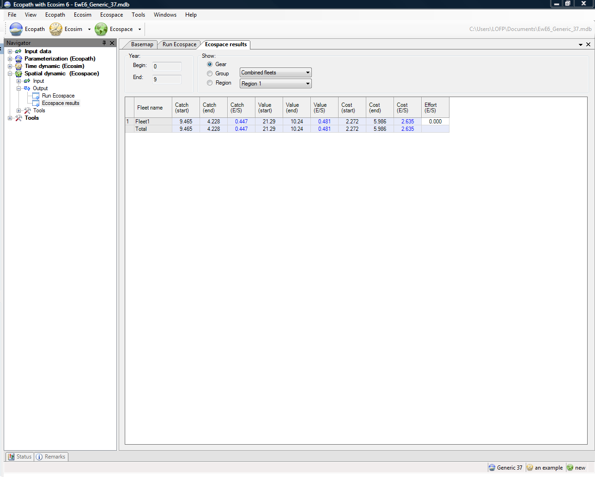
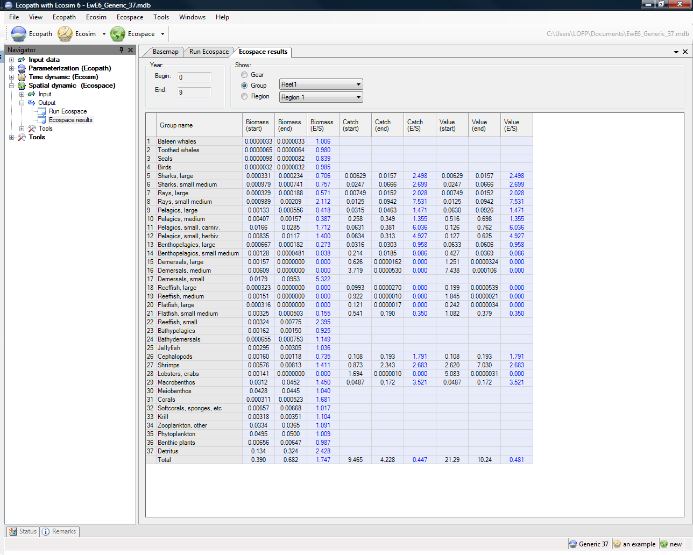
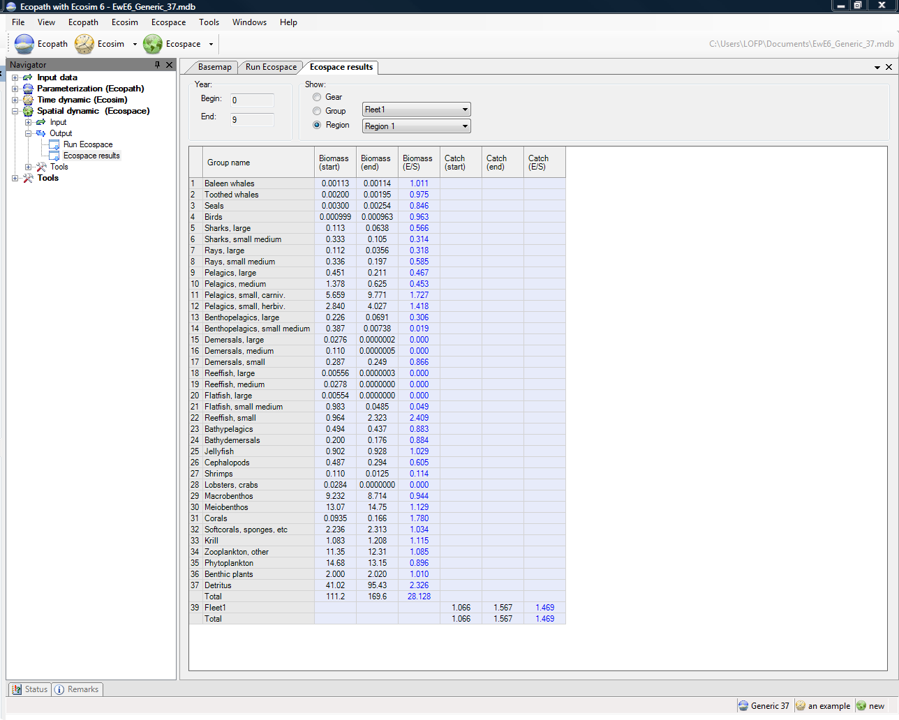

Results from Ecospace simulations are shown on the Ecospace results form (Spatial dynamic (Ecospace) > Output > Ecospace results). Users can choose to show results by Gear (i.e., fishing fleet), by Group or by Region.
Gear results are shown in terms of Catch, Value and Cost at the beginning and end of the simulation period.

Group results are shown in terms of Biomass, Catch and Value at the beginning and end of the simulation period. Users can elect to see Catch and Value results from all fleets combined or from individual fleets, using the pull-down menu on the form.

Region results are shown in terms of Biomass and Catch. Users can select the region to display from the pull-down menu on the form,
